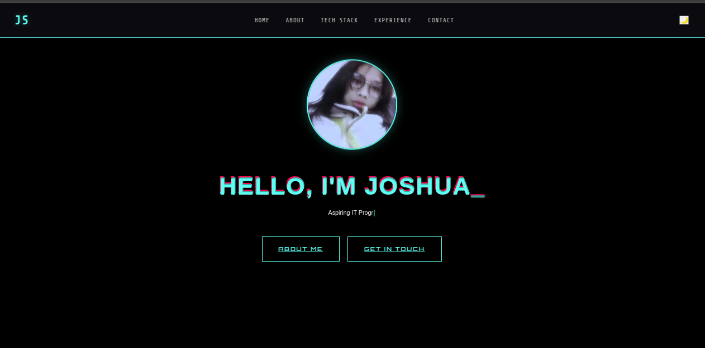
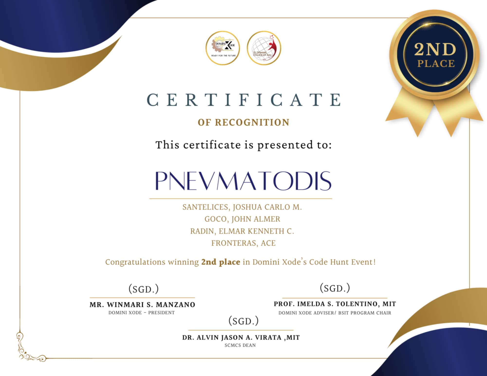
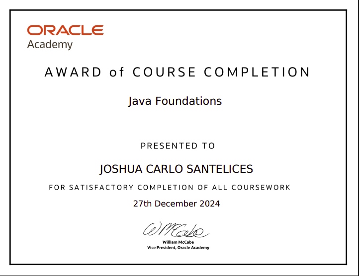

My Experience & Projects
Featured Projects

Academic Projects
Collection of programming activities and assignments completed during my BSIT coursework. Includes various programming exercises and small applications.
Flutter
Java
C++
HTML/CSS
Academic Progress
Present
BSIT Student
Bachelor of Science in Information Technology
- Currently pursuing my degree in Information Technology
- Learning programming fundamentals and web development
- Working on various coding projects and assignments
Ongoing
Academic Activities
Programming & Development
- Completing programming exercises and assignments
- Building small applications as part of coursework
- Learning new technologies and programming languages
Certificates


Technical Skills
Programming Languages
- Dart
- JavaScript
- Java
- C++
Web Technologies
- HTML5 & CSS3
- Bootstrap
Tools & Platforms
- Git & GitHub
- VS Code
- SQL
- Linux